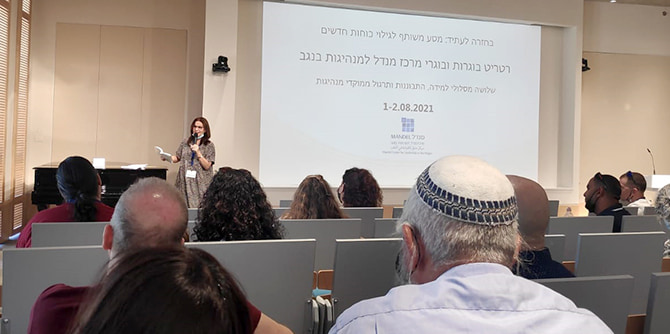
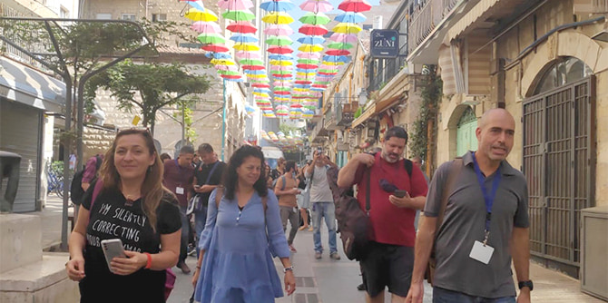
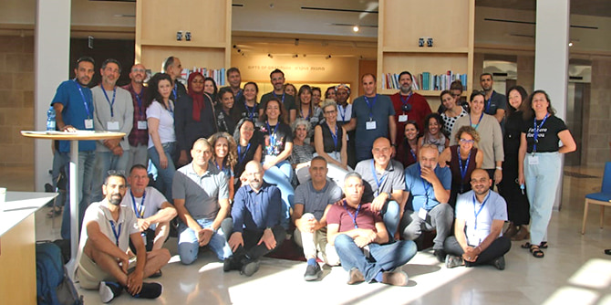

אל בית קרן מנדל בירושלים הגיעו כחמישים בוגרים ובוגרות מכלל תוכניות העבר של המרכז: מאילת, מיישובי הערבה, מנתיבות, מאופקים, מירוחם, מבאר שבע, מכסיפה, מערערה, מרהט ומערד. הרטריט נפתח בדברים מפי משה ויגדור, מנכ"ל קרן מנדל-ישראל, ד"ר עדי ניר שגיא, מנהלת מרכז מנדל למנהיגות בנגב, וישראל שורק, חבר סגל המרכז. הקבוצה נפגשה גם עם חברת הכנסת יסמין סאקס-פרידמן, בוגרת תוכנית מנדל למנהיגות אזורית בבאר שבע מחזור ג', כדי לשמוע ממנה על דרכה החדשה בבית המחוקקים.
הריטריט התמקד בלמידה מתוך רצון לתת מענה לשאלות ולסוגיות שעלו בקרב הבוגרים במהלך דיאלוג רב-משתתפים שהתקיים בימי מבצע "שומר החומות". במפגש התפצלו אפוא הבוגרים והבוגרות לשלושה סמינרים:
הקלו המים? – פתיחת צוהר לדיאלוג תוך כדי ואחרי מבול בהנחיית רוקייה מרזוק אבו רקייק ושרון לשם זינגר. הסמינר התמקד בדיאלוג עם עצמנו ועם הזולת בעתות קונפליקט – פנימי או חיצוני.
מנהיגות מחוללת עתיד בהנחיית ד"ר דניאל שני. סמינר שנועד להקנות גישה וכלים אפקטיביים להתמודדות עם אתגרים משמעותיים דרך מודעות והקשבה לחוויה האנושית, באמצעות שיטת ה- U.
השראה: מפגש בין לב לתבונה, או: ביקורת ההתפעלות הטהורה בהובלת ישראל שורק ובשיתוף עם
פרופ' דנה אריאלי וד"ר חגית דמרי, חברות סגל מרכז מנדל למנהיגות בנגב. הסמינר העמיק בשאלות על מקורות ההשראה ובשאלה איך נוכל להיעזר בה בעשייה שלנו ולמול אתגרים.

עבור רבים מן הבוגרים היה הריטריט הזדמנות להתחבר מחדש עם התכנים של מנדל, ליצור חיבורים ושותפויות, ולעצור ולהתבונן פנימה, ובלשונם של כמה מהם: "נזקקתי לרענון ולחיבור מחדש – גם לאנשים וגם למהות המנדליסטית. חיפשתי עצירה של הוויה והתבוננות – בניגוד ל'כיבויי השרפות' המאפיינים את היום-יום"; ״הייתה זו עצירה והתבוננות פנימה, זמן לעצמי, כדי להמשיך ולהעניק לסביבות השונות בהן אני פועל״; ״רצון להתפתח, להכיר ולעשות למידה מנותקת מהחיים כדי לחזור לאתגרי היום יום עם פרספקטיבות חדשות״.
אנו תקווה שעומק הלמידה ירחיב את המשימה החשובה של הבוגרים לשיפור איכות החיים בנגב.
צילום: גלית אבגי- כהן
{kind=link}
{kind=link}
{kind=link}